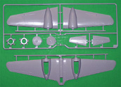

{kind=link}
{kind=link}
{kind=link}
{kind=link}
{kind=link}


Tamiya 1/48 Ki-46 Hyakushiki Shitei III Recon Plane
Kit #61045
MSRP $39.00
Images and text Copyright � 2006 by Matt Swan
Developmental Background
In 1937 the Japanese army issued specifications for a long range, high speed reconnaissance aircraft intended to handle the vast distances being encountered in China during the Sino-Japanese conflict. Mitsubishi took up the challenge and in 1939 started testing the first prototype. As with all new aircraft designs there were some teething issues but even so they had an aircraft that was faster than their premier fighter, the A6M2 Zero. Mitsubishi had just finished development of their advanced Ha-102 engine producing 1080 hp and this was selected to be incorporated into the Ki-46 and the type went into production as the Ki-46 II.
When it was encountered by Allied fighters it was assigned the designation �Dinah�. In 1942 the engines were upgraded to the Ha-112 producing 1500 hp each. With its clean lines and powerful engines the Ki-46 III flew its missions virtually unmolested until around 1945 when Allied aircraft were finally able to intercept it. This aircraft carried an electronically controlled Nikkor (today we know it as Nikon) 50cm f5.6 camera system in its belly along with a hand held unit used by the rear observer. It had a top speed of 600kph and an operational ceiling of 10,000 meters. When B-29s began to pummel the Japanese mainland a bomber interceptor type was developed with a stepped nose housing a battery of 2 20mm cannons and an oblique firing 37mm cannon mounted mid-fuselage. By wars end Mitsubishi had manufactured 34 Ki-46-I, 1093 Ki-46-II and 611 Ki-46-III. All versions of the aircraft suffered from weak landing gear and poor rate of climb.
The Kit
This is a well engineered kit consisting of five sprues of high pressure injected light gray polystyrene plastic and a single sprue of clear parts. The kit features nice, delicate engraved panel lines and finely raised fabric surfaces on the ailerons. Interior detail is good, the parts have no noticeable flash or heavy injector pins, No sink marks are evident anywhere � exactly what we would expect from Tamiya of the 1990s. The clear parts allow for the cockpit area to be modeled in the open or closed positions, they display crisp raised frame lines and have good clarity not to mention being nicely thin in construction. Included with the kit are propeller options for thin blade or paddle blade propellers. The kit does justice to the fine lines of the �Dinah� and looks to be an easy build.

You may click on the small images above to view larger pictures
Decals and instructions
Tamiya always seems to do a nice job on the instructions and this kit is no different. They consist of a single large fold-out sheet of four panels printed on front and back. Panel one contains a brief history of the aircraft in English, German, Japanese and French (?). Next comes a collection of basic modeling safety tips and a complete paint code chart listing paints by Tamiya code number and by color name. Following this are eleven exploded view assembly steps with good parts identification and plenty of color call-outs. Instructions are given for three marking lay-outs and exterior paint schemes.
Tamiya decals are something I�ve always been hesitant about. In the past, many years ago, I built the bomber interceptor version of this model and found the decals to be excessively thick and brittle. I had reports from other modelers of the same problem. Today it looks like Tamiya has resolved this issue. These kit decals are printed by Scale-Master and look to be properly thin with good print registry and color density. The decals cover the basic Hino Marus and tail codes for three aircraft along with the yellow wing leading edge markings. There are no service stencils or warning markings included.
Conclusions
This was probably one of the most elegant aircraft of the Second World War and Tamiya has done a nice job of representing it. Everything is well engineered as we would expect from this manufacture and I don�t think you will even need to find your tube of putty when building this one. Instructions are good, model profile mates well to aircraft plans and decals are adequate. The kit is pretty well filled with all the detail items needed but there are still a few things on the aftermarket such as mask sets from Cutting Edge and Eduard. Eduard also had a few photo etched sets such as flaps, interior sets and landing gear sets. They also carry a colored PE set that looks pretty sharp. Squadron offers a replacement canopy set and Engines and Things has replacement engines available.
Overall this looks to be a nice kit of a beautiful aircraft and one well worth adding to your collection.